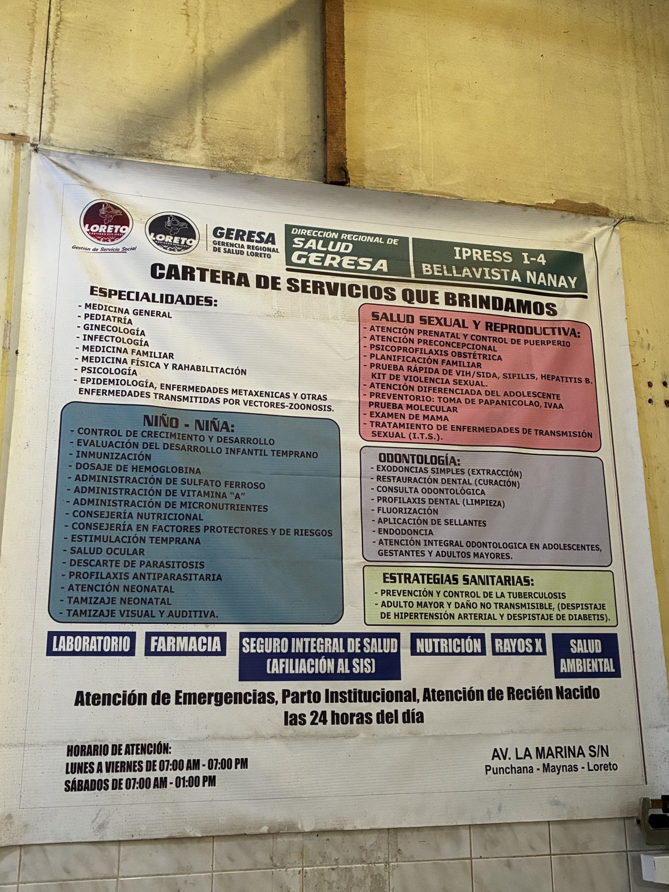
1 · Parede do posto
O que o posto oferece, escrito na entrada
Num estabelecimento de saúde de Punchana, a lista de serviços ocupa a parede: vacinas, saúde da criança, saúde sexual, emergência 24 horas.
Uma informação de saúde é como uma gota: cai num lugar e se espalha em ondas. Fomos ver como isso acontece numa cidade cercada de rio.
Passe o mouse ou toque na água
A equipe do ECoS cruzou o continente de leste a oeste, até a Amazônia peruana.
De Lima, só de avião, por cima dos Andes. Quem não voa desce dias de barco por rios como o Marañón e o Huallaga.
Amazonas, Nanay e Itaya. É aqui que a pergunta do projeto fica concreta: por onde passa a informação de saúde quando o caminho é a água?
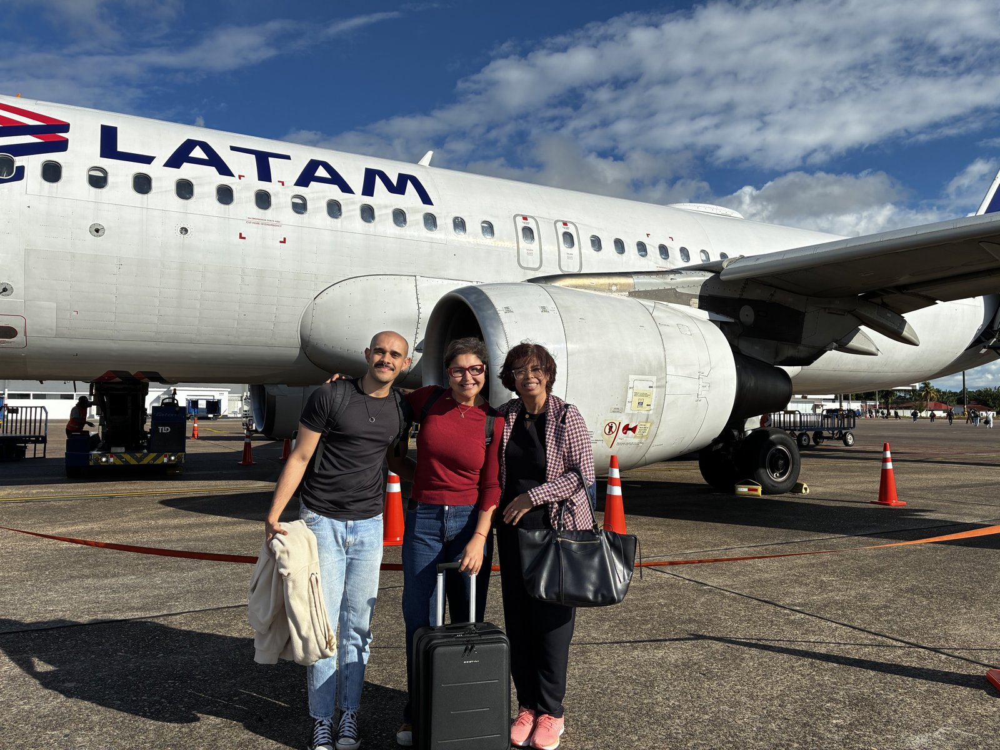
Antes das entrevistas, a cidade. Um mosaico do que a equipe viu nas ruas e na beira do rio.
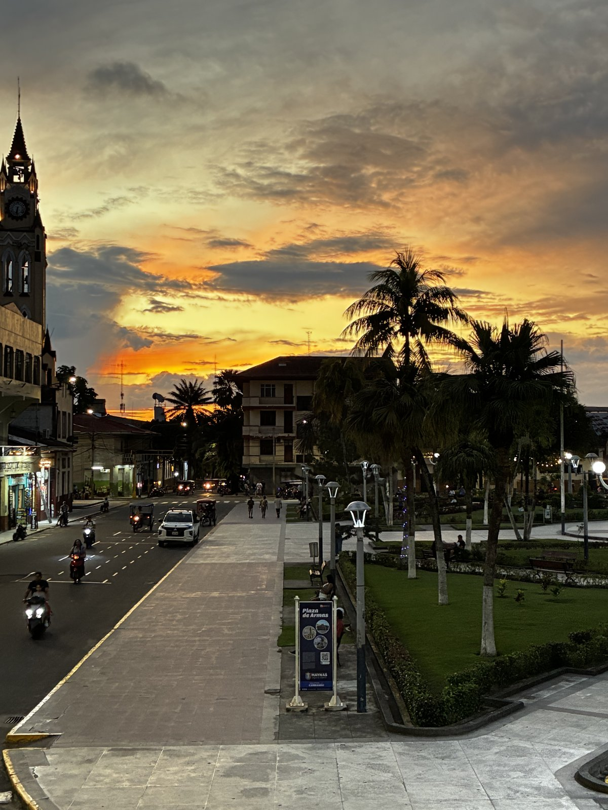
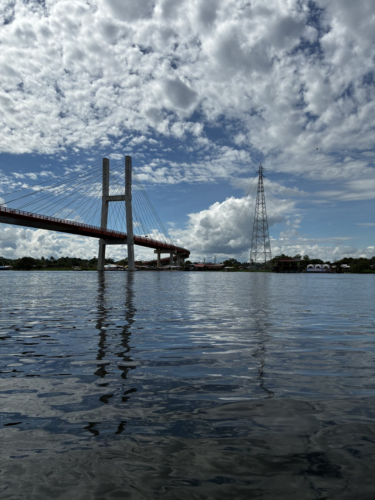
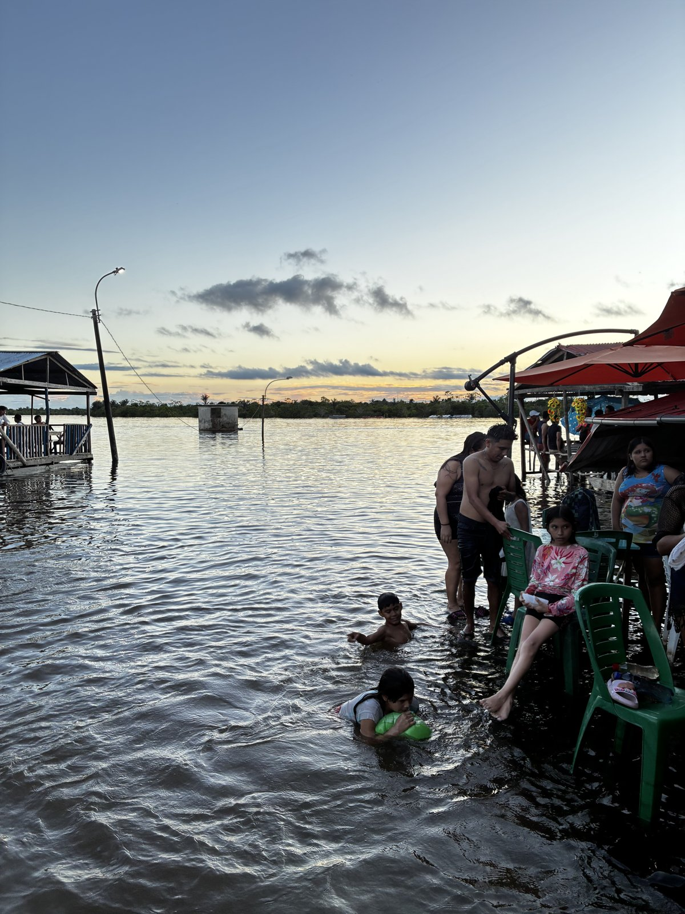
Amazonas, Nanay, Itaya
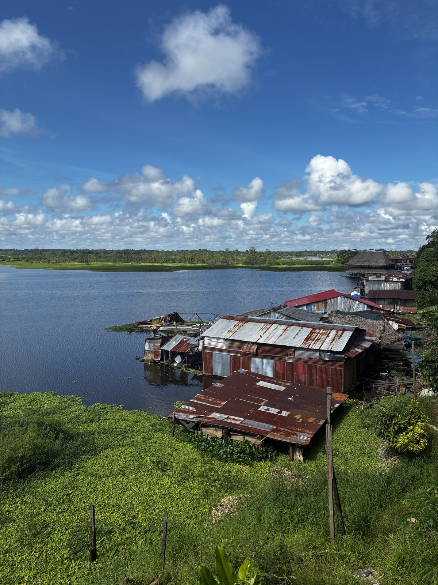
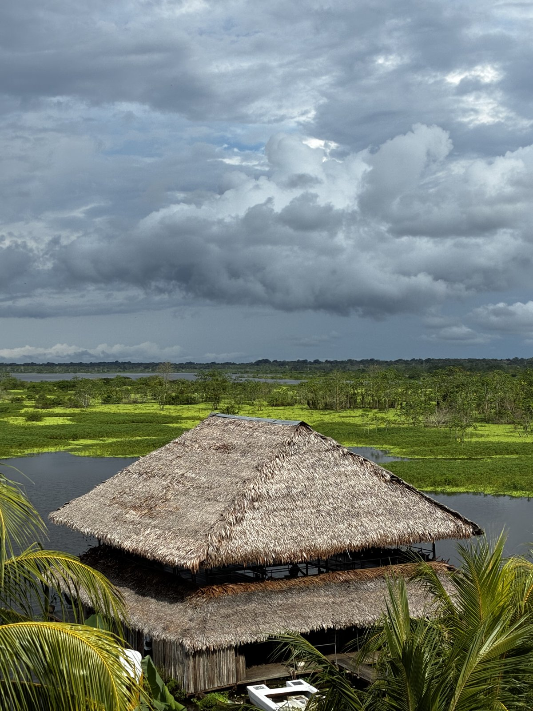
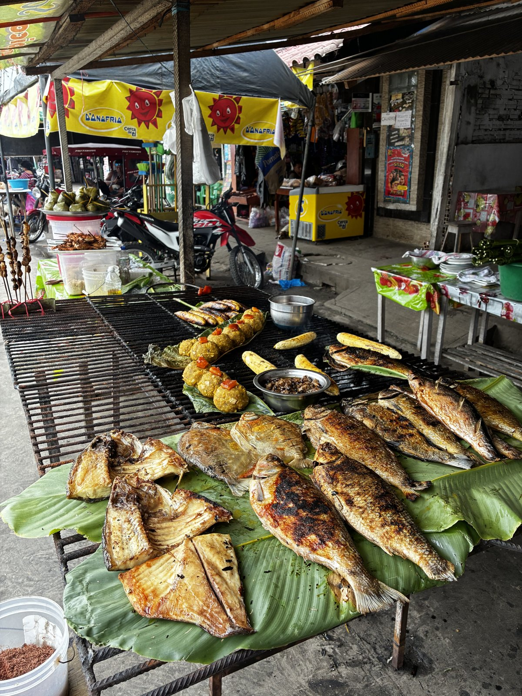
Quatro lugares onde a equipe encontrou informação de saúde. Cada carta empurra a anterior para trás.

Num estabelecimento de saúde de Punchana, a lista de serviços ocupa a parede: vacinas, saúde da criança, saúde sexual, emergência 24 horas.
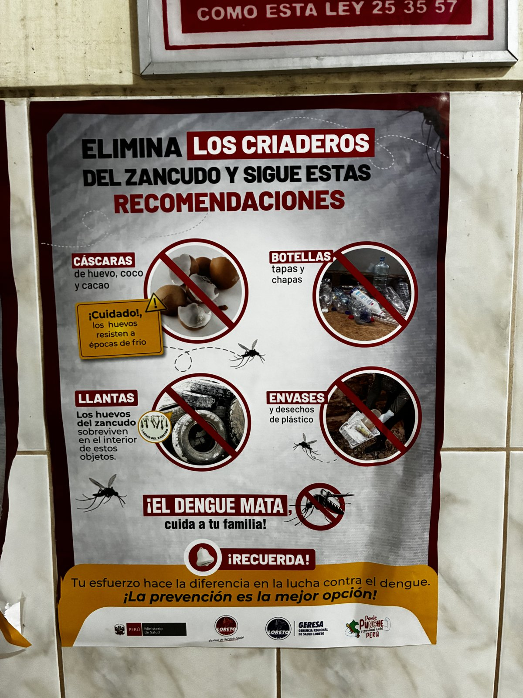
Cartazes oficiais ensinam a eliminar criadouros. A pergunta da pesquisa é o que acontece com essa mensagem quando ela compete com o que circula fora do posto.
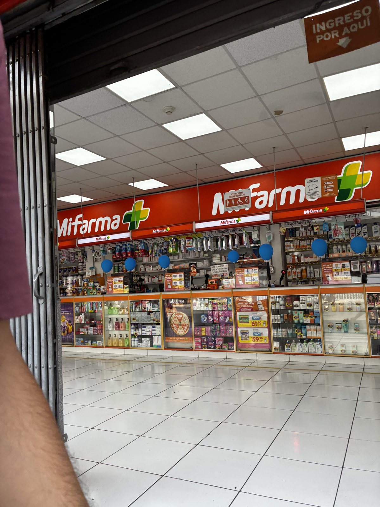
Para muita gente, a farmácia é o primeiro lugar onde se pergunta. A orientação chega junto com o remédio.
Rádio comunitária e áudios encaminhados chegam onde o posto não chega. Também é por eles que boatos viajam rápido.
Um áudio sobre a dengue cai no grupo do bairro. Em pouco tempo ele passou pelo rádio, pelo balcão da farmácia e chegou ao posto. Clique ou toque na água para soltar outra gota.
Ilustração do caminho que a pesquisa investiga. Não é um dado medido.
Apresentar o projeto, ouvir a equipe de saúde, visitar uma comunidade. As fotos se espalham como cartas na mesa.
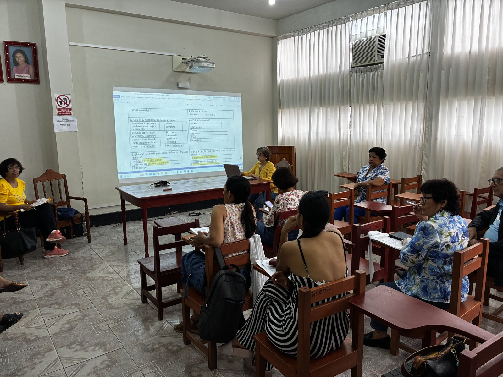
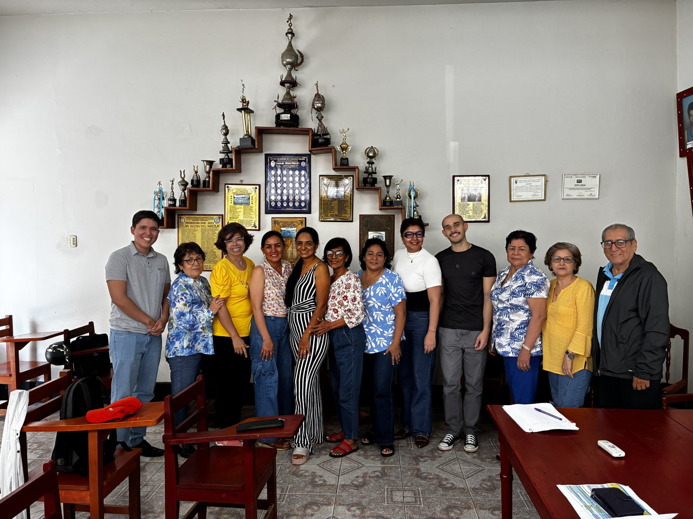
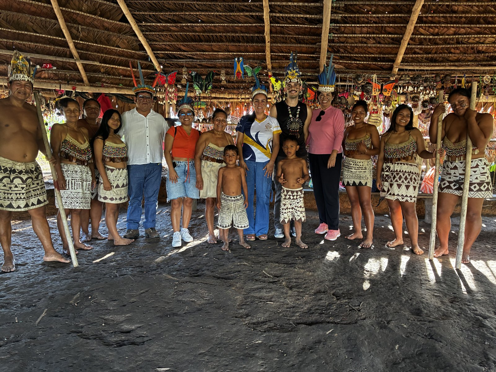
Contagens descritivas e anônimas. Nenhum nome, nenhum estabelecimento identificável.
Dados de exemplo para mostrar o formato. Os números reais entram depois da publicação dos artigos, sempre agregados.
Trechos curtos, traduzidos do espanhol e sem identificação. Estes dois são ilustrativos.
Quando chega um áudio sobre a dengue no grupo do bairro, as pessoas vêm ao posto já com a resposta pronta.Enfermeira · Punchana · exemplo
Rio acima, o rádio ainda chega onde o sinal do celular não chega.Técnico de saúde · Iquitos · exemplo
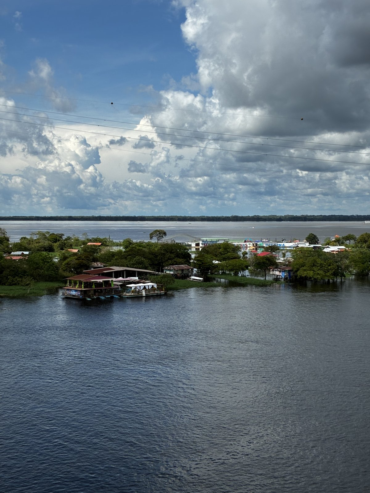
O rio segue. O diário também.
Fotos: equipe ECoS/UnB, trabalho de campo no Peru. Legendas provisórias.